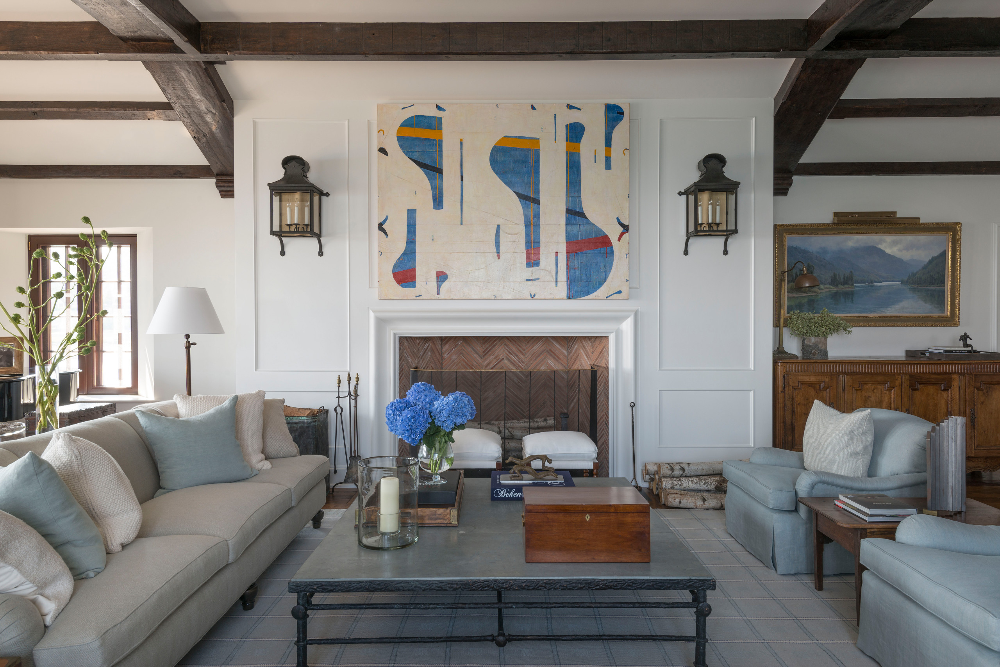
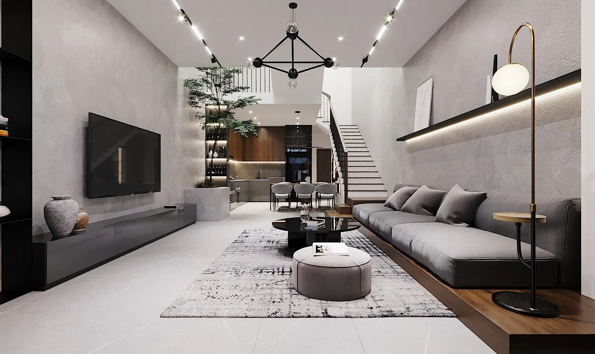
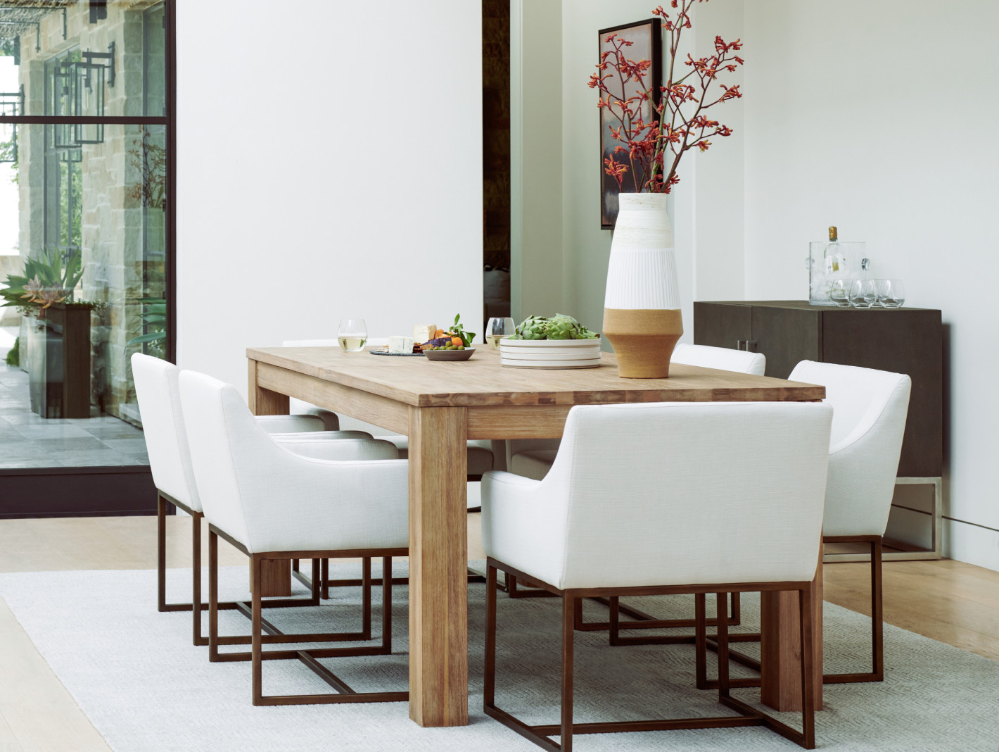
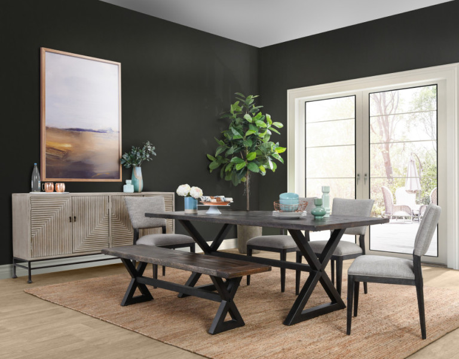

5 sai lầm trang trí nội thất khiến nhà bạn mất điểm ngay
Việc trang trí nội thất đóng vai trò then chốt trong việc tạo nên một không gian sống thoải mái, tiện
nghi và
thể hiện gu thẩm mỹ của gia chủ. Tuy nhiên, không phải ai cũng có kinh nghiệm và kiến thức để trang
trí
nội
thất một cách hiệu quả. Nhiều người thường mắc phải những sai lầm phổ biến, dẫn đến việc tốn kém chi
phí,
thời gian và công sức mà kết quả lại không như mong muốn. Bài viết này, Blog nội thất Flexhouse VN
sẽ
chỉ ra
5 sai lầm thường gặp khi trang trí nội thất mà bạn nên tránh để tạo nên không gian sống hoàn hảo.
Trang trí nội thất là làm gì? Tại sao nó lại quan trọng
Bạn đã bao giờ bước vào một căn phòng và cảm thấy ngay lập tức bị thu hút, cảm nhận được sự hài hòa,
tinh
tế
và một nguồn năng lượng tích cực từ không gian đó? Đó chính là sức mạnh của trang trí nội thất.
Nhưng
trang
trí nội thất thực sự là gì, và tại sao nó lại quan trọng đến vậy?
Trang trí nội thất không chỉ đơn thuần là việc sắp xếp đồ đạc vào một căn phòng. Nó là một nghệ
thuật,
một
quá trình sáng tạo, đòi hỏi sự am hiểu về màu sắc, ánh sáng, vật liệu, bố cục, phong cách và công
năng
sử
dụng. Nó là sự kết hợp hài hòa giữa yếu tố thẩm mỹ và tính ứng dụng, nhằm tạo nên một không gian
sống
không
chỉ đẹp mắt mà còn thoải mái, tiện nghi và phản ánh cá tính của gia chủ.
Một nhà thiết kế nội thất chuyên nghiệp sẽ xem xét tất cả các yếu tố này, từ việc lựa chọn màu sơn
tường,
kiểu dáng đồ nội thất, chất liệu vải bọc, đến việc bố trí ánh sáng và sắp đặt cây xanh, để tạo nên
một
tổng
thể hoàn chỉnh và ấn tượng.

Trang trí nội thất là gì
Vậy tại sao trang trí nội thất lại quan trọng? Có rất nhiều lý do:
Tạo không gian sống thoải mái và tiện nghi: Một không gian sống được trang trí tốt sẽ đáp
ứng
tối
đa nhu cầu sử dụng của gia đình. Việc bố trí đồ đạc hợp lý, lựa chọn màu sắc phù hợp sẽ tạo nên
cảm
giác
thoải mái, thư giãn, giúp bạn tái tạo năng lượng sau một ngày dài mệt mỏi.
Nâng cao chất lượng cuộc sống: Một không gian sống đẹp, hài hòa sẽ tác động tích cực đến
tâm
trạng, cảm xúc và sức khỏe của bạn. Nghiên cứu cho thấy, môi trường sống có ảnh hưởng lớn đến
tinh
thần
và năng suất làm việc của con người.
Thể hiện cá tính và gu thẩm mỹ: Ngôi nhà là nơi phản ánh cá tính và gu thẩm mỹ của gia
chủ.
Thông
qua việc lựa chọn phong cách trang trí, màu sắc, đồ nội thất, bạn có thể thể hiện được phong
cách
sống
và cá tính riêng của mình. Bạn yêu thích sự đơn giản, tinh tế của phong cách tối giản, hay sự
sang
trọng, cổ điển của phong cách châu Âu? Tất cả đều có thể được thể hiện qua cách bạn trang trí
nội
thất
cho ngôi nhà của mình.
Tăng giá trị cho ngôi nhà: Một ngôi nhà được trang trí đẹp mắt và hợp lý sẽ có giá trị
cao
hơn
trên thị trường bất động sản. Đây là một yếu tố quan trọng cần cân nhắc, đặc biệt nếu bạn có ý
định
bán
hoặc cho thuê nhà trong tương lai.
Những phong cách trang trí nội thất xu hướng 2025
Khi bắt đầu trang trí nội thất, việc lựa chọn phong cách phù hợp là rất quan trọng. Phong cách trang
trí
không chỉ phản ánh cá tính của chủ nhà mà còn tạo nên không gian sống thoải mái, hài hòa. Dưới đây
là
những
phong cách trang trí nội thất đang được ưa chuộng và dự đoán sẽ tiếp tục phát triển mạnh mẽ trong
năm
2025:
Phong cách hiện đại: Đặc trưng với đường nét đơn giản, màu sắc trung tính và sự tối giản
trong
thiết kế.
Phong cách cổ điển: Mang đến sự sang trọng, quý phái với các chi tiết chạm khắc tinh tế
và
màu
sắc ấm áp.
Phong cách Scandinavian: Phong cách này chú trọng vào sự tối giản và tính tiện nghi, với
tông
màu
sáng và vật liệu tự nhiên.
Phong cách tối giản: Tập trung vào sự đơn giản, gọn gàng, không có quá nhiều chi tiết
rườm
rà.
Mỗi phong cách có đặc điểm riêng và tạo ra cảm giác khác biệt. Việc lựa chọn phong cách phù hợp với
không
gian và nhu cầu của bạn sẽ giúp không gian sống trở nên hoàn hảo hơn

Phong cách nội thất hiện đại, tối giản
Né ngay 5 lỗi khi trang trí nội thất kẻo hối tiếc
Việc trang trí nội thất cho ngôi nhà thân yêu của bạn có thể là một hành trình thú vị, nhưng cũng đầy
thử
thách. Một vài sai lầm nhỏ cũng có thể khiến không gian sống trở nên kém hài hòa và thiếu thẩm mỹ.
Hãy
cùng
Flexhouse VN điểm qua 5 lỗi thường gặp khi trang trí nội thất và cách để tránh chúng, giúp bạn tạo
nên
một
không gian sống hoàn hảo.
Bỏ qua bước lên kế hoạch khi trang trí nội thất nhà ở
Bạn có thường đâm đầu vào việc mua sắm nội thất chỉ vì thấy đẹp mắt mà quên mất việc lên kế hoạch
tổng
thể?
Đây là một sai lầm mà rất nhiều người mắc phải. Lập kế hoạch chi tiết chính là nền tảng cho một dự
án
trang
trí nội thất thành công. Nó giống như một tấm bản đồ chỉ đường, giúp bạn định hình rõ ràng phong
cách,
xác
định nhu cầu, dự trù ngân sách, lựa chọn đồ nội thất phù hợp, và tối ưu hóa thời gian, công sức.
Bỏ qua bước lập kế hoạch, bạn dễ rơi vào mua sắm bốc đồng, dẫn đến sự hỗn loạn về phong cách, ngân
sách
vượt
tầm kiểm soát, và cuối cùng là một không gian sống không như ý, thậm chí gây khó chịu. Hãy dành thời
gian
nghiên cứu, lên ý tưởng, liệt kê chi tiết từng món đồ, và lập một kế hoạch chi tiết, tỉ mỉ trước khi
bắt
đầu
bất kỳ công việc trang trí nào. Điều này không chỉ giúp bạn tiết kiệm tiền bạc mà còn mang lại hiệu
quả
thẩm
mỹ cao hơn.
Sao chép ý tưởng trang trí nội thất một cách máy móc
Thời đại internet bùng nổ, việc tìm kiếm ý tưởng trang trí nội thất trở nên dễ dàng hơn bao giờ hết.
Mạng
internet và các tạp chí tràn ngập những hình ảnh không gian sống lung linh, cung cấp nguồn cảm hứng
vô
tận
cho bạn. Tuy nhiên, việc sao chép một cách máy móc, không có sự chọn lọc, điều chỉnh và cá nhân hóa,
sẽ
khiến không gian sống của bạn trở nên nhạt nhòa, thiếu cá tính, và quan trọng hơn là không phù hợp
với
nhu
cầu, lối sống của gia đình.
Mỗi ngôi nhà đều có những đặc điểm riêng về kiến trúc, diện tích, ánh sáng… và mỗi gia đình đều có
những
nhu
cầu và sở thích khác nhau. Hãy tham khảo các ý tưởng, lấy cảm hứng từ chúng, nhưng đừng quên điều
chỉnh
và
cá nhân hóa chúng để tạo nên không gian sống mang đậm dấu ấn riêng của bạn, một không gian thực sự
là
của
bạn, phản ánh cá tính và gu thẩm mỹ của chính bạn.
Chọn đồ nội thất không phù hợp với kích thước căn phòng
Kích thước của đồ nội thất là yếu tố quan trọng ảnh hưởng trực tiếp đến sự cân bằng và hài hòa của
không
gian. Một chiếc sofa quá khổ trong một căn phòng khách nhỏ hẹp sẽ tạo cảm giác chật chội, ngột ngạt,
khiến
việc di chuyển trở nên khó khăn, thậm chí gây cảm giác bức bối, khó chịu. Ngược lại, đồ nội thất quá
nhỏ
trong một căn phòng rộng lớn sẽ khiến không gian trở nên trống trải, thiếu cân đối, mất đi sự ấm
cúng và
kém
thẩm mỹ.

Bộ bàn ghế ăn phù hợp làm cho không gian thêm ân tượng
Hãy tưởng tượng một chiếc bàn ăn nhỏ xíu “lọt thỏm” giữa một căn phòng ăn rộng lớn, hoặc một chiếc
giường
đơn
lẻ loi trong một căn phòng ngủ master rộng rãi. Vì vậy, trước khi mua sắm bất kỳ món đồ nội thất
nào,
hãy đo
đạc kỹ lưỡng kích thước căn phòng và cân nhắc kỹ lưỡng kích thước của từng món đồ để đảm bảo sự cân
đối,
hài
hòa cho không gian.
Thiếu điểm nhấn trong trang trí nội thất
Bạn đã dành rất nhiều thời gian và công sức để lựa chọn đồ nội thất, sắp xếp chúng một cách cẩn thận,
nhưng
căn phòng vẫn trông có vẻ nhạt nhòa, thiếu sức sống? Rất có thể, không gian của bạn đang thiếu điểm
nhấn.
Điểm nhấn là gì?
Điểm nhấn trong trang trí nội thất là những yếu tố nổi bật, giúp tạo sự chú ý và làm không gian trở
nên
ấn
tượng. Những điểm nhấn này có thể là một món đồ nội thất đặc biệt, một bức tranh nghệ thuật hay một
chi
tiết
trang trí độc đáo. Nếu không có điểm nhấn, không gian của bạn sẽ trở nên đơn điệu và thiếu sự thu
hút.
Chính
vì thế, việc tạo ra điểm nhấn sẽ giúp không gian trở nên sinh động hơn.
Cách tạo ra điểm nhấn trong trang trí nhà
Để tạo điểm nhấn trong trang trí nội thất, bạn có thể sử dụng các món đồ có màu sắc, hình dạng hoặc
chất
liệu
đặc biệt, chẳng hạn như một chiếc ghế sofa màu sắc nổi bật, một bức tranh nghệ thuật lớn trên tường,
hoặc
một chiếc đèn bàn kiểu dáng lạ mắt. Điểm nhấn này không cần phải chiếm quá nhiều diện tích, nhưng
phải
đủ để
làm cho không gian trở nên sinh động và ấn tượng.
Thiếu sự đồng bộ khi trang trí
Tại sao sự đồng bộ lại quan trọng trong trang trí nhà cửa
Một trong những yếu tố quan trọng để tạo nên một không gian sống hoàn hảo là sự đồng bộ giữa các món
đồ
nội
thất. Nếu mỗi món đồ trong ngôi nhà của bạn mang một phong cách khác nhau, điều này sẽ khiến không
gian
trở
nên thiếu sự kết nối và mất đi sự hài hòa. Đồng bộ không có nghĩa là tất cả phải giống nhau, mà là
có sự
kết
nối trong kiểu dáng, màu sắc hoặc chất liệu để tạo nên một không gian thống nhất.
Vậy làm sao để có được sự đồng bộ giữa các món đồ nội thất?
Hãy chắc chắn rằng các món đồ trong không gian có sự liên kết nhất định về màu sắc, phong cách hoặc
chất
liệu. Ví dụ, nếu bạn chọn phong cách hiện đại với gam màu trung tính, hãy giữ phong cách này cho
toàn bộ
không gian sống. Điều này giúp tạo ra một không gian đồng nhất, dễ chịu và sang trọng hơn, tránh
việc
quá
nhiều phong cách lạ lẫm tạo nên sự lộn xộn.

Tạo sự đồng bộ trong trang trí nội thất nhà
Tránh được 5 sai lầm trên sẽ giúp bạn tạo nên một không gian sống đẹp, tiện nghi và mang đậm dấu ấn
cá
nhân.
Hy vọng bài viết từ Flexhouse VN đã cung cấp cho bạn những thông tin hữu ích. Hãy liên hệ với chúng
tôi
để
được tư vấn thêm về phụ kiện trang trí nội thất, từ trang trí nội thất phòng khách đến trang trí nội
thất
phòng ngủ, và khám phá thêm những xu hướng trang trí nội thất mới nhất.